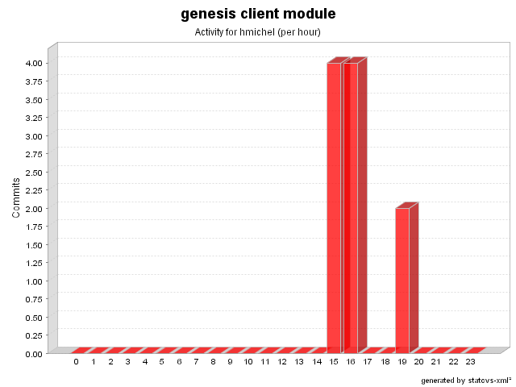

| Login: hmichel Fullname: hmichel Revisions: 10 Lines of Code: 253 Added Lines of Code: 361 Lines of Code per Change: 25.3 |

| Date | Author | File/Message |
|---|---|---|
| 1/24/08 3:51 PM | hmichel | Refactoring making issue #448 compatible to JTable subclasses as JXTable, and some otimizations.
(4 Files changed,
116 Lines changed) src/net/java/dev/genesis/ui/swing/components/table/DefaultJTableIndexResolver.java 1.2
(+87
-32)
src/net/java/dev/genesis/ui/swing/components/JTableComponentBinder.java 1.14
(+19
-9)
src/net/java/dev/genesis/ui/swing/components/table/JTableIndexResolver.java 1.2
(+1
-3)
src/net/java/dev/genesis/ui/swing/components/table/JTableIndexResolverRegistry.java 1.2
(+9
-9)
|
| 1/17/08 4:47 PM | hmichel | Issue #448 - Generic implementation for JTable data reordering support.
(4 Files changed,
203 Lines changed) src/net/java/dev/genesis/ui/swing/components/table/JTableIndexResolverRegistry.java 1.1 added 62 src/net/java/dev/genesis/ui/swing/components/table/JTableIndexResolver.java 1.1 added 34 src/net/java/dev/genesis/ui/swing/components/JTableComponentBinder.java 1.13
(+32
-55)
src/net/java/dev/genesis/ui/swing/components/table/DefaultJTableIndexResolver.java 1.1 added 75 |
| 12/1/07 7:44 PM | hmichel | Added more tests, for string values into comboxes.
(2 Files changed,
42 Lines changed) test-src/net/java/dev/genesis/ui/swing/components/SwingUtils.java 1.2
(+13
-0)
test-src/net/java/dev/genesis/ui/swing/components/JComboBoxComponentBinderTest.java 1.7
(+29
-0)
|